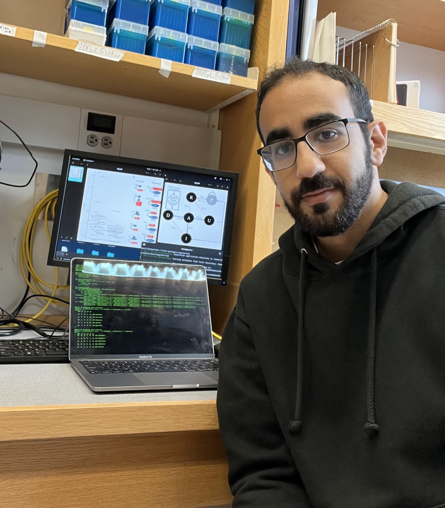
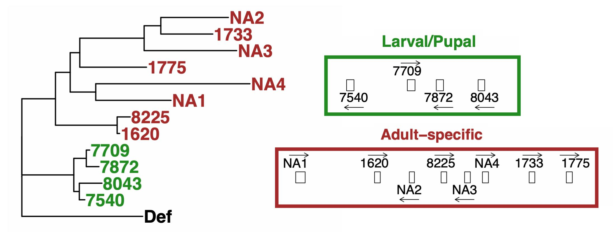
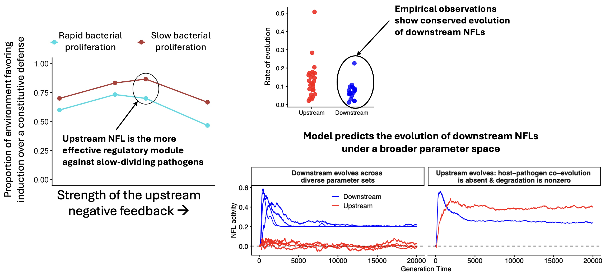
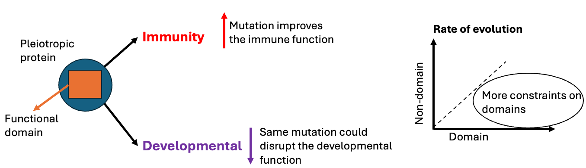

Danial Asgari
Postdoctoral Researcher | Vanderbilt University
Research interests
I am a postdoctoral researcher at Vanderbilt University studying the evolution of the insect immune system. My research spans several areas of insect immunity: the evolution of antimicrobial peptides (AMPs) across Diptera and Coleoptera; the evolution of signaling pathways that regulate AMP expression using mathematical models; and the evolutionary constraints on immune genes that are pleiotropic with development.

1. Evolution of Antimicrobial Peptides
Antimicrobial peptides (AMPs) exist in all multicellular organisms and are used as a defense against pathogens. In insects, discrete developmental stages demand adaptation of AMPs across ontogeny. My research has demonstrated this in both stable flies and house flies, revealing developmental stage-specific patterns of AMP expression, as well as distinct patterns of phylogenetic clustering and genomic organization (Asgari, Nayduch, et al. 2024; Asgari, Purvis, et al. 2024). I’m currently studying AMPs and proteins involved in immune signaling in Coleoptera, focusing on Tribolium species.

2. Evolution of Negative Feedback Loops within Immune Signaling Pathways
Signaling pathways are regulated by negative feedback loops (NFLs) that function upstream to reduce input to the system or downstream to reduce the output. Why is there multilayer regulation of signaling pathways? In immune signaling, NFLs reduce energetic costs and prevent autoimmunity. I use mathematical models to understand how NFLs evolve and whether they are redundant or provide unique benefits. I have shown that increasing the strength of upstream NFLs, assuming they help reduce immune costs, allows an induced response to outperform a constitutive defense (not regulated by NFLs) across a broader range of environments (left) (Asgari, Stewart, et al. 2024). My research also shows that downstream NFLs evolve more robustly to variations in pathogen and signaling pathway properties than upstream regulators (right) (Asgari and Tate 2025).

3. Evolution of Pleiotropic Immune Genes
Pleiotropic genes perform multiple functions and are therefore expected to experience stronger evolutionary constraints. This is because mutations that improve one function may be deleterious to another. I am currently studying pleiotropic genes within immune signaling pathways across Drosophila species, with a particular focus on differences in evolutionary rates between domain and non-domain regions (Asgari and Tate 2026). My current research shows strong purifying selection on domain regions of pleiotropic genes.
